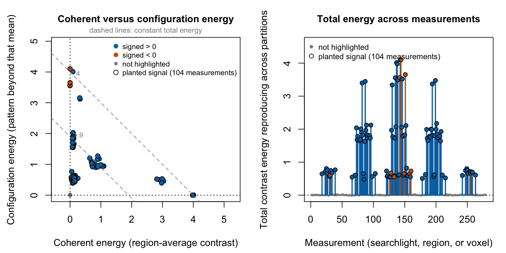
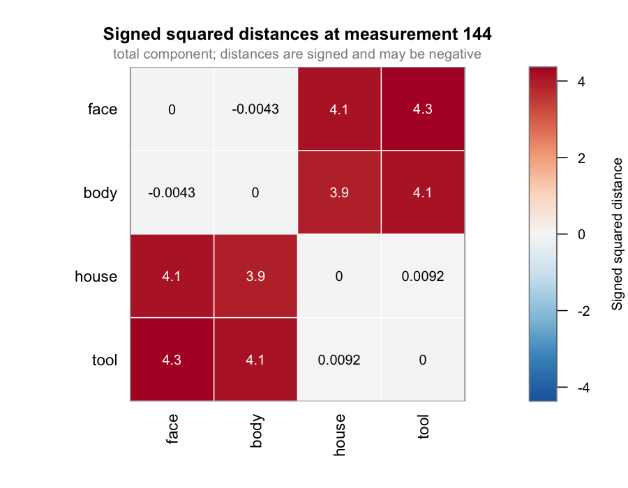

Get started · Vignettes · API reference · Examples
Crossform is an R package for studying representations with univariate contrasts, multivariate distances, and representational similarity analysis (RSA). It measures effects that reproduce across independent runs and separates the contribution of a region’s average response from its spatial pattern.
These readings share a declared geometry: the same condition effects, spatial measurements, partition pairing, and neural metric. You can change the question without refitting the condition effects.
Status: Experimental development package; APIs may change.
Install
These guides follow the elite-pass development branch, currently proposed in PR #3. Install that version from GitHub. Building from source requires an R toolchain with a C++ compiler.
# install.packages("remotes")
remotes::install_github("bbuchsbaum/crossform", ref = "elite-pass")The online vignettes need no installation. For an offline copy, add build_vignettes = TRUE to the installation call; this also requires Pandoc and the vignette dependencies.
A first result
The built-in example has four conditions, four runs, and 280 searchlights. Each searchlight is one spatial measurement and produces one row of results.
library(crossform)
example <- example_fmri_effects()
plan <- plan_geometry(
example$fit$relation,
at = example$frame,
over = cross_partitions(
example$fit$relation,
independence = "independent",
generalizes_over = "run"
)
)
effect <- contrast_energy(plan, example$contrast)
plot(effect, highlight = example$truth$signal_measurements,
highlight_label = "planted signal")
The simulation plants two effects with similar total energy. One shifts nearby voxels in the same direction; the other varies across voxels. The left panel separates them, while the right shows their total energy.
round(as.data.frame(effect)[c(144, 137),
c("signed", "coherent", "configuration", "total")], 3)
#> signed coherent configuration total
#> 144 -0.052 -0.001 4.104 4.103
#> 137 2.003 4.011 0.004 4.015-
signedis the ordinary contrast of the weighted mean response. -
coherentis the crossvalidated energy in that spatial mean mode. -
configurationis the crossvalidated energy beyond the mean mode. -
totalis their sum:coherent + configuration = total.
Searchlight 144 has a strong spatial pattern with little average response; 137 has a strong average response. The decomposition depends on the declared spatial frame, so it describes the effect at that measurement and scale.
Crossvalidated energy can be negative. Under the required independence assumptions, a null effect has expected energy zero; the observed band around zero is not a significance threshold. coherence_fraction is reported only when the components form a valid nonnegative partition.
The example supplies independent simulated errors. With your own data, independence = "independent" is an assumption about estimation errors, not a guarantee created by run labels. Shared preprocessing or training can couple runs. generalizes_over records whether the pairing represents runs, sessions, or another declared axis.
Read the same geometry in other ways
An RDM reports signed crossvalidated squared distances between conditions:

Fixed linear RSA fits model RDMs using the same plan:
category <- rsa(plan, models = list(category = example$model_rdm))
dim(category$coefficients)
#> [1] 280 2The two columns are the intercept and category-model coefficient. If you need only selected distances, request those pairs directly:
Each view evaluates its requested geometry query. The first-level effects are reused, and an unused full RDM need not be materialized. rdm() uses squared Euclidean distance, or squared Mahalanobis distance with a suitable fixed metric; pattern correlation answers a different question.
Uncertainty needs an error model
The example retains a fitted residual error channel. On this admitted design, it supports within-searchlight standard errors under a declared null target:
round(sqrt(sampling_covariance(
rdm_sampling_covariance(plan, example$fit, target = "null", at = peak)
)), 4)
#> face - body face - house face - tool body - house body - tool house - tool
#> 0.0142 0.0142 0.0142 0.0142 0.0142 0.0142These rely on the supported partition, metric, and error-covariance assumptions. They do not account for choosing the peak, spatial multiplicity, or population variation. Imported beta matrices alone do not supply the residual channel. The observation-to-effects guide shows how to retain it; the failure gallery explains unavailable results and their remedies.
Choose your next step
All 15 vignettes are available as rendered articles. The article index groups them by task; their R Markdown sources are also on GitHub.
| Task | Guide |
|---|---|
| Follow the first analysis | Introduction |
| Interpret energy, sign, and spatial scale | Reading results |
| Fit effects from responses and events | From observations |
| Work with brain volumes | neuroim2 data |
| Migrate an existing analysis | From rMVPA |
| Compare spatial effect types | Matched interpretability |
| Account for overlapping measurements | Conservative frames |
| Learn a form and test independent prediction | Predictive geometry |
| Relate two sets of measurements | Evidence pairing |
| Model participant geometries | Population forms |
| Choose magnitude or pattern correlation | Correlation and distance |
| Diagnose an unsupported request | Failure gallery |
| Follow the shared algebra | Common geometry |
| Examine claims and their evidence | Novelty and boundaries |
| Build an adapter | Extending crossform |
With vignettes installed, the same guides are available offline:
vignette("introduction", package = "crossform")Scope and evidence
Crossform accepts condition effects or fits them from observations. Spatial frames support searchlights, regions, voxels, and whole-domain measurements. For model-supported prediction, it learns a regularized low-rank form on training data and measures signed predictive gain on independent data with the same conditions. The fitted PSD form is a separate, biased latent estimate; it does not replace the signed crossvalidated geometry.
Measurement coupling and population analysis are experimental. Coupling has bounded small-node support. Population intervals are pointwise and conditional on declared transport and coverage; they do not include uncertainty from learning that transport or arbitrary missingness. Crossform does not replace image preprocessing, registration, or general spatial multiple-testing tools.
Numerical equivalence is checked with independent oracles and version-pinned rsatoolbox comparisons. Real-data exemplars illustrate workflows; benchmark receipts record workload-specific runtime and memory. These establish bounded computational evidence, not universal performance or neuroscientific claims. See the evidence ledger and design contracts for the assumptions behind each claim.
License
MIT. See LICENSE.